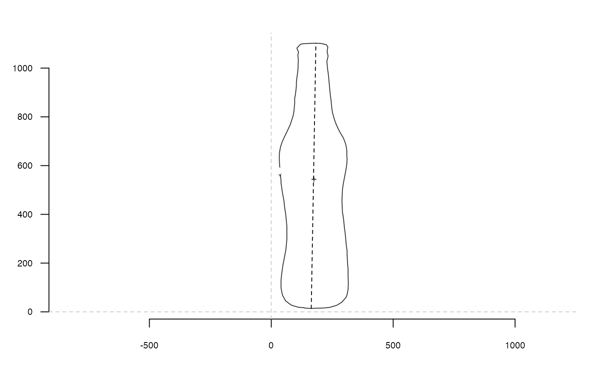

Also called the Feret's diameter, the longest distance between two points of the shape provided.
See also
Other coo_ utilities:
coo_align(),
coo_aligncalliper(),
coo_alignminradius(),
coo_alignxax(),
coo_baseline(),
coo_bookstein(),
coo_boundingbox(),
coo_centdist(),
coo_center(),
coo_centpos(),
coo_close(),
coo_down(),
coo_dxy(),
coo_extract(),
coo_flipx(),
coo_force2close(),
coo_interpolate(),
coo_is_closed(),
coo_jitter(),
coo_left(),
coo_likely_clockwise(),
coo_nb(),
coo_perim(),
coo_range(),
coo_rev(),
coo_right(),
coo_rotate(),
coo_rotatecenter(),
coo_sample(),
coo_sample_prop(),
coo_samplerr(),
coo_scale(),
coo_shearx(),
coo_slice(),
coo_slide(),
coo_slidedirection(),
coo_slidegap(),
coo_smooth(),
coo_smoothcurve(),
coo_template(),
coo_trans(),
coo_trim(),
coo_trimbottom(),
coo_trimtop(),
coo_untiltx(),
coo_up(),
is_equallyspacedradii()
Examples
b <- bot[1]
coo_calliper(b)
#> [1] 1088.166
p <- coo_calliper(b, arr.ind=TRUE)
p
#> # A tibble: 1 × 2
#> length arr_ind
#> <dbl> <list>
#> 1 1088. <dbl [2]>
p$length
#> [1] 1088.166
ids <- p$arr_ind[[1]]
coo_plot(b)
segments(b[ids[1], 1], b[ids[1], 2], b[ids[2], 1], b[ids[2], 2], lty=2)

# on a Coo
bot %>%
coo_sample(32) %>% # for speed sake
coo_calliper()
#> $brahma
#> [1] 1087.768
#>
#> $caney
#> [1] 992.2107
#>
#> $chimay
#> [1] 644.5991
#>
#> $corona
#> [1] 806.6778
#>
#> $deusventrue
#> [1] 880.8053
#>
#> $duvel
#> [1] 606.7462
#>
#> $franziskaner
#> [1] 863.4501
#>
#> $grimbergen
#> [1] 766.5801
#>
#> $guiness
#> [1] 743.6162
#>
#> $hoegardeen
#> [1] 1046.608
#>
#> $jupiler
#> [1] 981.2747
#>
#> $kingfisher
#> [1] 717.4761
#>
#> $latrappe
#> [1] 746.2345
#>
#> $lindemanskriek
#> [1] 819.0562
#>
#> $nicechouffe
#> [1] 686.7001
#>
#> $pecheresse
#> [1] 927.4034
#>
#> $sierranevada
#> [1] 655.6706
#>
#> $tanglefoot
#> [1] 690.334
#>
#> $tauro
#> [1] 983.9842
#>
#> $westmalle
#> [1] 765.7114
#>
#> $amrut
#> [1] 864.1209
#>
#> $ballantines
#> [1] 711.5118
#>
#> $bushmills
#> [1] 882.1485
#>
#> $chivas
#> [1] 794.3198
#>
#> $dalmore
#> [1] 683.668
#>
#> $famousgrouse
#> [1] 607.8199
#>
#> $glendronach
#> [1] 821.1796
#>
#> $glenmorangie
#> [1] 986.0183
#>
#> $highlandpark
#> [1] 705.139
#>
#> $jackdaniels
#> [1] 798.2042
#>
#> $jb
#> [1] 1011.163
#>
#> $johnniewalker
#> [1] 337.8772
#>
#> $magallan
#> [1] 756.595
#>
#> $makersmark
#> [1] 858.3298
#>
#> $oban
#> [1] 858.7974
#>
#> $oldpotrero
#> [1] 596.5668
#>
#> $redbreast
#> [1] 425.3011
#>
#> $tamdhu
#> [1] 1007.425
#>
#> $wildturkey
#> [1] 1099.426
#>
#> $yoichi
#> [1] 714.077
#>
bot %>%
coo_sample(32) %>% # for speed sake
coo_calliper(arr.ind=TRUE)
#> # A tibble: 40 × 2
#> length arr_ind
#> * <dbl> <list>
#> 1 1088. <dbl [2]>
#> 2 992. <dbl [2]>
#> 3 645. <dbl [2]>
#> 4 807. <dbl [2]>
#> 5 881. <dbl [2]>
#> 6 607. <dbl [2]>
#> 7 863. <dbl [2]>
#> 8 767. <dbl [2]>
#> 9 744. <dbl [2]>
#> 10 1047. <dbl [2]>
#> # ℹ 30 more rows